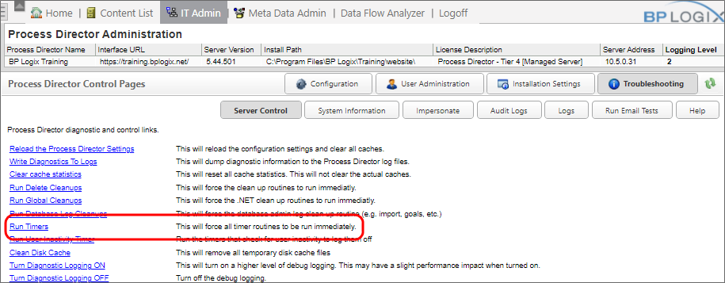

Activity Check Page
Activity Check Page
Activity Check Page
Activity Check PageProcess Director runs as a virtual directory in IIS and processes all time-related events like due dates when activity is present on the system (e.g. Users are actively working on the system). But, Process Director doesn't have a constantly running timer service, it is only active when IIS is active and it is processing web page requests. If there are no active users, IIS goes inactive and shuts down after 20 minutes of inactivity. We want to avoid that during business hours, but still leave some time for IIS to restart on its own during a period of inactivity. So, we have provided an activity check page in the installation folder, named activity_check.aspx.
The activity check page does a couple things. First, it keeps IIS active so it doesn't shut down and need to restart during the business day. Second, it tells Process Director that timer process should NOT occur under the context of a user, but only occur in the context of the activity_check.aspx page. If timer processing occurs under the context of a user, they may see their session hang while the processing is occurring, but setting the timer context to the activity check page will avoid this.
 We recommend setting the activity check page to run every 15 minutes for a duration of 15 hours. Setting the activity check timer to 15-minute intervals will prevent IIS from shutting down every 20 minutes if the system has no active users, while ending the checks after 15 hours allows IIS to shut down the Application Pool at night, when the system isn't active.
We recommend setting the activity check page to run every 15 minutes for a duration of 15 hours. Setting the activity check timer to 15-minute intervals will prevent IIS from shutting down every 20 minutes if the system has no active users, while ending the checks after 15 hours allows IIS to shut down the Application Pool at night, when the system isn't active.
To run the activity check page on a scheduled basis, you can set the following command in the Windows Scheduler utility to be run according to the highlighted schedule above:
PATH\bputil.exe" SU "http://localhost/activity_check.aspx"
In this example, PATH is the installation directory for Process Director (e.g. c:\Program Files\BP Logix\Process Director\).
There are a number of URL parameters that you can apply to the URL for the activity check page above that will enable the activity check to check specific processes. Only one of these URL parameters can be used at any time.
For instance, you can do an activity check on a Workflow definition by using the command
PATH\bputil.exe" SU "http://localhost/activity_check.aspx?WFID=XXXXXX"
The activity check page can't be run from a remote host. It can only be executed from the local server where Process Director is installed, or run remotely when logged in as an administrator. Assuming that the remote host is a secure server, however, you can add the remote server to the list of "local IPs" in the installation settings to cause Process Director to treat the remote host as a local host.
When the activity check page runs, Process Director will determine which timer processing functions need to occur. (There are a few things like GOALS that will be evaluated EVERY time the activity check runs because they are low-impact.) You can control the timer functions by setting custom variables in the vars.cs customization file. These timer functions are NOT controlled by the frequency that the activity_check.aspx page is scheduled.
There are several Custom Variables that control the amount of time to wait between different types of timer processing. These Custom Variables, examples of their configuration, and other details, are provided in the Activity Checking Custom Variables topic of the Developers Guide.
There are ways for force the timer processing to occur without being governed by the Custom Variables. Instead, you can pass special URL parameters on the activity_check.aspx URL query string. For example, you can pass a Workflow definition ID (WFID) on the URL, which tells Process Director to process all timers for all running Workflow instances under that definition. This should be used with care to prevent excessive resource utilization if used too often. The following URL Parameters are available to run timers on specific objects:
Timers can also be manually forced from the Troubleshooting page of the IT Admin area, by clicking the Run Timers action link.

Process Director v4.52 and higher implements advanced timer checking to ensure that new instances of a running timer can't be created until the current instance of the running timer has completed.